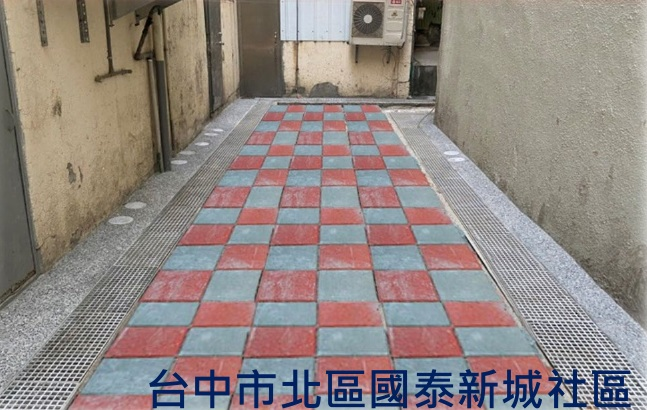
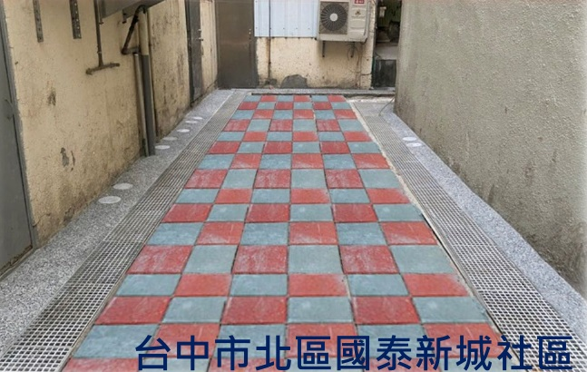

什麼是
污水下水道？
污水下水道透過密閉管線收集家庭雜排水並送至水資源回收中心處理，與雨水管線分流，防止堵塞與惡臭，維護公共衛生。
改善環境品質，打造更潔淨、更舒適的生活空間。
污水下水道透過密閉管線收集家庭雜排水並送至水資源回收中心處理，與雨水管線分流，防止堵塞與惡臭，維護公共衛生。

未接管前，雨水污水皆排入側溝，排水油脂堵塞。
晴天污水淤積，惡臭異味。
施工後，排水順暢，街道環境改善，提升生活品質與市容美觀。

根據「下水道法」，在專案工程（獎勵接管）期間，若污水管網已到達地區且具足夠空間，主幹管以外之用戶接管及用戶排水設備可委託政府代為施作。 公共管線完成公告開始使用後六個月內，若未接管，將依「下水道法」第32條處罰未接管用戶。
| 條文依據 | 內容 |
|---|---|
| 第19條 | 公共管線完成後，公告開始使用，六個月內必須接管。 |
| 第32條 | 若逾期未接管，政府可依規定處罰用戶。 |
| 專案工程 | 政府可代辦用戶接管及用戶排水設備施工。 |
| 類別 | 內容 |
|---|---|
| 自主權 | 若因房屋結構或其他因素，用戶可自行辦理接管，但需向機關申請並同意後辦理。 |
| 補助權 | 於專案獎勵接管期間，可享有政府代辦施工與補助方案。 |
| 知情權 | 用戶可依公告了解管線完成及使用期限，保障施工透明。 |
接管後環境整潔衛生改善，增加活動空間、空氣流通、採光良好。
後巷環境髒亂，易積水，
蚊蠅叢生，是環境的死角。
接管後環境整潔衛生，增加
通行空間、採光明亮度。


化糞池需定期抽水肥維護，每月投藥保養，
而且是蚊蟲(病媒)及臭味(硫化氫及甲烷)的來源。
接管廢除化糞池後，省下定期抽水肥、維護保養費用，
同時環境整潔、空氣清新。
完成接管後，每戶每年可省下約 3,000～6,000 元，同時免去維護與異味困擾。
結合當地特色打造新景點，帶動都市美學。
美化後巷成為鄰里間良好的溝通與活動空間。

 


為了鼓勵住戶盡早接管公共污水下水道，政府提供用戶接管補助，減輕民眾施工與管線接駁的費用負擔。
透過補助方案，住戶可以用較低的成本完成家戶污水排放的改善，不僅能提升生活環境衛生，也能共同維護社區水質與城市整體環境品質。

化糞池位於地面層水利局協助廢除(不補助)

化糞池位於地面層+自行改管至前巷水利局提供改管補助
補助5,000元/套

申請之建築物經本局通知並配合於指定期限內(進入裁罰前)完成用戶接管相關工程，
而須向金融機構貸款者，得申請最高新臺幣五千元貸款手續處理費，
本局並依金融機構出具之繳款證明一次發給。
建築物所有權人屬中低收入戶或低收入戶，為完成用戶接管相關工程，得於施工前提出申請，
本局並於完工後核實補助；其補助金額最高新臺幣十五萬元。
不行。依據《下水道法》，公告6個月內未接管者將面臨罰鍰。
是的。政府發包的施工廠商僅負責公共管線與化糞池廢除，自費改管需自行委託廠商。